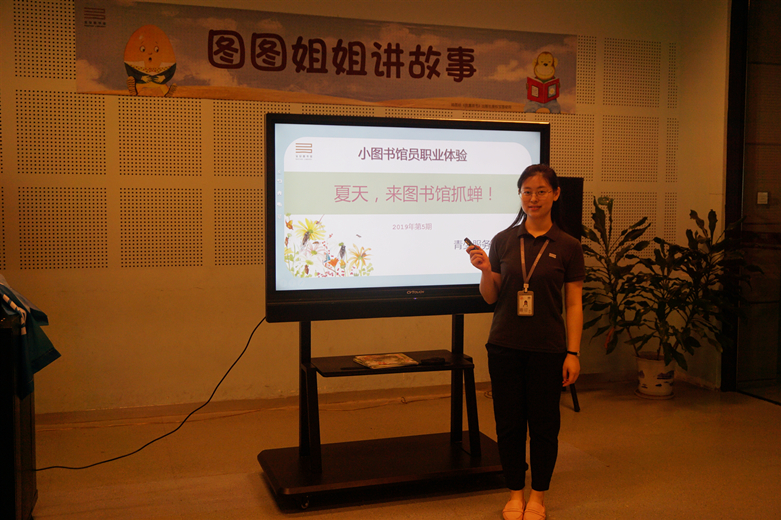

2019年6月23日下午三点，第5期小图书馆员职业体验活动在我馆一楼青少年多功能活动室如期举行。本期活动面向7-9岁的亲子家庭，通过搭建活动平台，让更多的少儿读者走进宝安区公共图书馆，了解图书馆的读者服务业务，从而熟练地使用图书馆的馆藏资源，培养图书馆信息素养，养成良好的阅读习惯。
本期活动的主题是“夏天，来图书馆抓蝉！”，主讲人是我馆图书馆员韦诗懿老师。本期活动分为素养培训、职业体验、通关密令三个环节。
本期活动的主题是“夏天，来图书馆抓蝉！”，主讲人是我馆图书馆员韦诗懿老师。本期活动分为素养培训、职业体验、通关密令三个环节。
第一个环节，素养培训。韦老师结合自己儿时抓蝉的经历与小朋友们分享了蝉——这个夏天最常见的昆虫。活动现场小朋友们积极互动，有的学蝉叫、有的说蝉鸣叫不用嘴、有的说蝉是没有耳朵的……对于小朋友提出的问题，韦老师带着大家一一揭秘。而整场分享在一段昆虫视频锦集播放后迎来高潮，小读者们纷纷表示：还想再看一遍。而想要在图书馆里找到昆虫类书籍要怎样查找呢？接着，韦老师带着大家认识图书馆。首先，介绍了我馆的各楼层功能布局、图书馆规则、少儿活动类型以及图书排架方式。并以“昆虫”类主题图书为例，讲述了如何通过图书馆OPAC检索系统、宝安图书馆微信公众号以及自助检索机检索图书，小朋友们收获满满。
第二个环节，职业体验。小朋友们分为两组，穿上印有“小图书馆员职业体验”字样的小马甲，在韦老师和董老师的带领下有序地前往一楼少儿图书馆进行职业体验活动，分别体验图书整理排架和秩序员两部分工作，为读者提供服务。
第三个环节，通关密令。此环节为活动后自愿参与环节，小朋友们通过填写并提交《通关密令》，检验素养培训成果，反馈职业体验活动感受。
本期活动圆满结束，活动达到了预期效果。整场活动内容上，从理论到实践，小朋友和家长们认真学习了图书馆借阅规则、自助设备操作等图书馆基础业务知识；同时，深入到少儿图书馆一线岗位，体验图书馆员的日常工作，为图书馆读者服务工作增添活力。我们将继续优化小图书馆员职业体验活动，为宝图的少儿读者们提供阅读成长的舞台。
